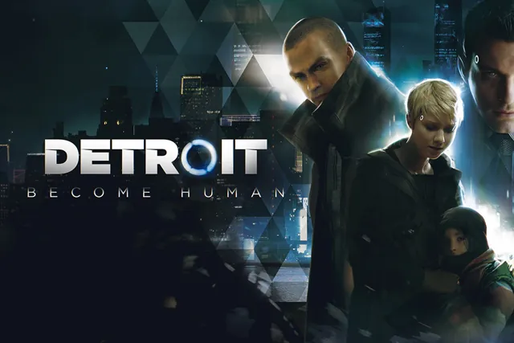
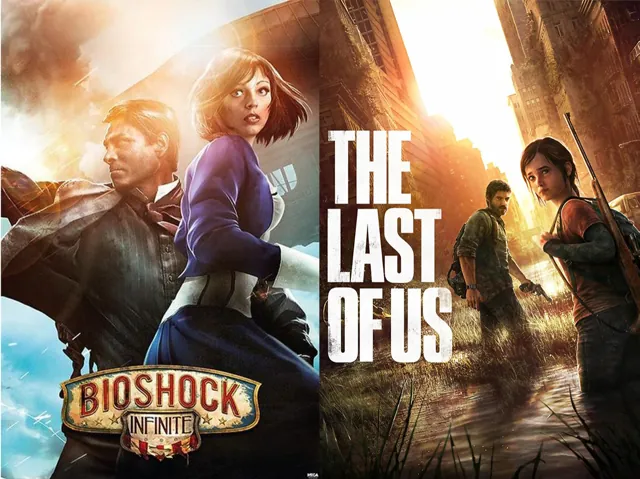
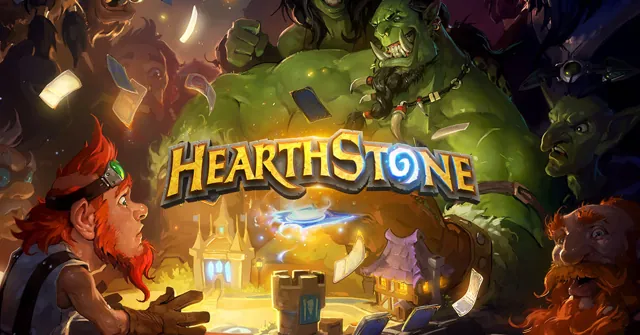
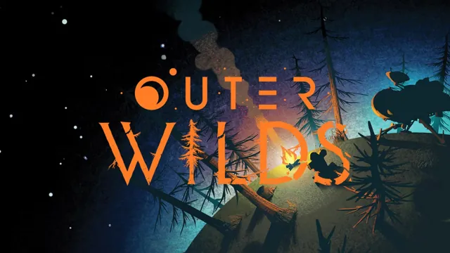

玩到或做到一个让我停下来想的东西，就写一篇。时间循环、随机性、叙事与机制的关系、商业模式如何塑造设计、AI 能帮上什么忙。每篇均提供中文译文、完整英文原文与原有配图。
买断制游戏不像 F2P 那样依赖留存，为什么还是满是重复的清营地和收集品？答案藏在商业模式如何塑造设计优先级里。
AI 不会替你设计游戏，但它会改变你做游戏的方式——在快速原型、内容生成和工具开发上最有用，在系统平衡和"好不好玩"上最无力。

我曾经认为游戏是终极的叙事媒介。做完 Grey Waves 之后，这个看法没有被推翻，但变得复杂得多。

很多"剧情驱动"的游戏，故事其实活在玩法之外。真正成功的叙事游戏，是机制本身在讲故事——以《最后生还者》和《生化奇兵：无限》为例。

炉石的随机不是叠在策略之上的，而是嵌在每一个策略决策里——这正是它让人一直动脑、一直想玩的原因。

用《星际拓荒》聊聊：为什么一个固定时长的时间循环，会比很多开放世界更让人觉得自由。